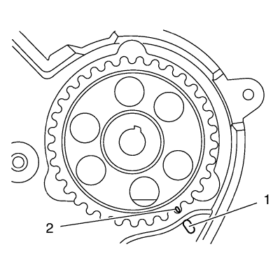
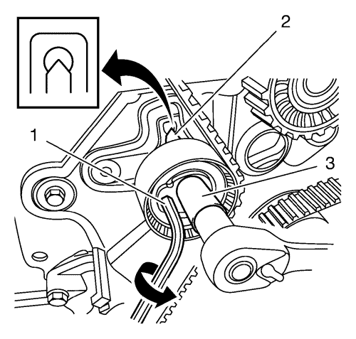
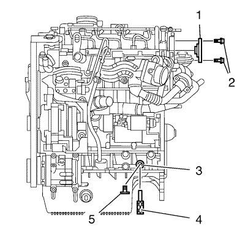

Nota: Asegúrese de que la superficie del árbol de levas (2) no tiene grasa ni aceite.
- Monte el piñón (1) de accionamiento del árbol de levas.
- Monte el tornillo del piñón de accionamiento del árbol de levas (4) y la arandela del tornillo del piñón de accionamiento del árbol de levas (3).

- Gire el piñón de accionamiento de la bomba de combustible hasta que estén alineadas las marcas (1) y (2).

Nota: Compruebe que la correa de distribución está tensa durante el montaje.
- Monte la correa de distribución (1) en el siguiente orden:
| 4.1. | Piñón del cigüeñal (7) |
| 4.2. | Polea de la bomba de agua (6) |
| 4.3. | Polea de accionamiento de la bomba de combustible (4) |
| 4.4. | Polea loca de correa de distribución (3) |
| 4.5. | Piñón de accionamiento del árbol de levas (2) |
| 4.6. | Tensor de correa de distribución (5) |

- Gire la lengüeta de la llave hexagonal (1) en sentido antihorario para tensar la correa. Gire hasta que el punto se alinee con la ranura (2).
Precaución:Consulte Precaución con las fijaciones en la sección Prólogo.
- Si se alinea con la ranura (2), apriete el tornillo del tensor de la correa de distribución (3) a 25 N·m (19 lib. pie).

- Desmonte la herramienta de bloqueo EN-48246 (1) y extraiga los tornillos (2). Desmonte la herramienta de bloqueo EN-48245 (4) del orificio de la carcasa inferior del cigüeñal (3). Monte el tornillo de cierre (5) de la carcasa inferior del cigüeñal y apriételo a 30 N·m (23 lib. pie).

Nota: Si las marcas de alineación no están alineadas, repita el procedimiento hacia adelante y vuelva a comprobar las marcas. La alineación de las marcas es fundamental para el rendimiento del motor y las emisiones.
- Gire el cigüeñal 2 vueltas en el sentido horario y compruebe su posición.

Nota:
| • | Compruebe que el orificio (1) del árbol de levas (2) queda encima. |
| • | Examine si el árbol de levas y el cigüeñal están en las posiciones correctas. |
- Compruebe la posición del árbol de levas.

- Monte una junta de bomba de vacío nueva (3).
- Monte el soporte EN-6347 y el mango EN-956-1 (2) para fijar el piñón del árbol de levas (1).
- Apriete el tornillo del piñón de accionamiento del árbol de levas a 133 N·m (99 lib. pie).